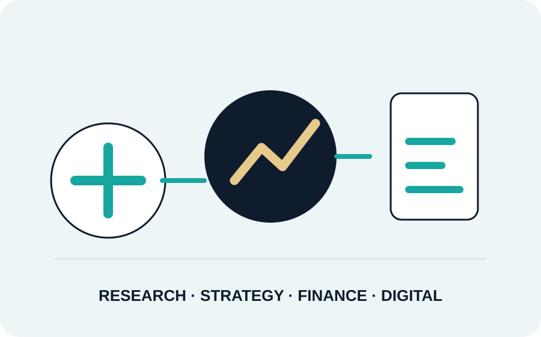
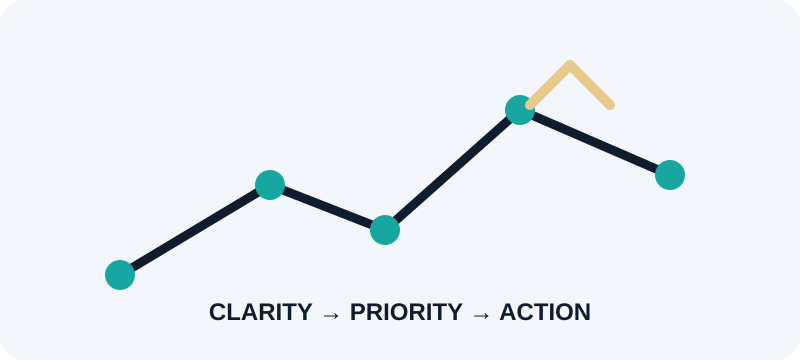
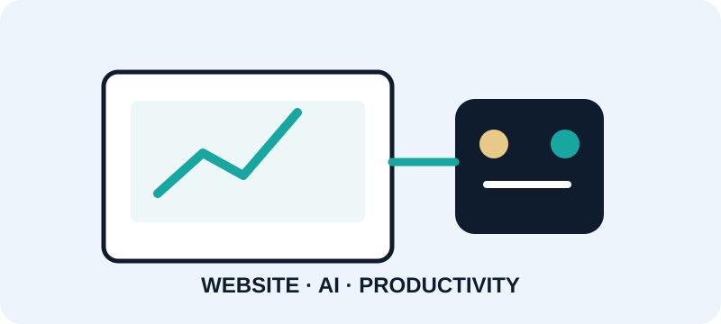

Market Research & Intelligence
Evidence-led market, customer, competitor and industry intelligence.
- Market & industry research
- Market sizing & forecasting
- Competitive intelligence
- Customer & opportunity assessment
USR Advisory & Consulting Services is an independent boutique advisory practice helping businesses understand markets, shape strategy, evaluate financial opportunities and adopt practical digital and AI solutions.

RESEARCH → STRATEGY → FINANCE → DIGITALEvidence-led market, customer, competitor and industry intelligence.

02 / STRATEGYStructured problem-solving for growth, market entry and strategic decisions.
Financial analysis, valuation, business finance support and practical advisory.

04 / DIGITAL + AISimple, practical digital solutions for businesses that want to improve their online presence and use AI effectively.
Assess market attractiveness, competition, customer opportunity and entry considerations.
See how we help →Identify growth opportunities, strategic priorities, business-model considerations and go-to-market choices.
See how we help →Understand financial performance, valuation considerations, cash flows, costs and business economics.
See how we help →Create or improve your website, automate common customer questions and build practical AI capability.
See how we help →*Experience of the founder/leadership across research, consulting and advisory roles; not a statement of USR's company operating history.
The founder's professional background spans market research, consulting, strategy and business analysis roles at PwC, Grant Thornton, Acuity Knowledge Partners, Aranca and Infiniti Research.
These organizations reflect individual professional experience and are not clients, partners or endorsers of USR Advisory & Consulting Services.
A market-size figure is only useful when it is built to answer a specific business question.
Read more →Revenue, margins, costs, cash flow and ratios can reveal where a business is creating or losing value.
Read more →Prompt engineering, research support and data analysis can make common knowledge-work tasks faster and more structured.
Read more →Tell us what you are trying to understand, decide, improve or build. We can shape the engagement around the requirement.
Schedule a Consultation ↗